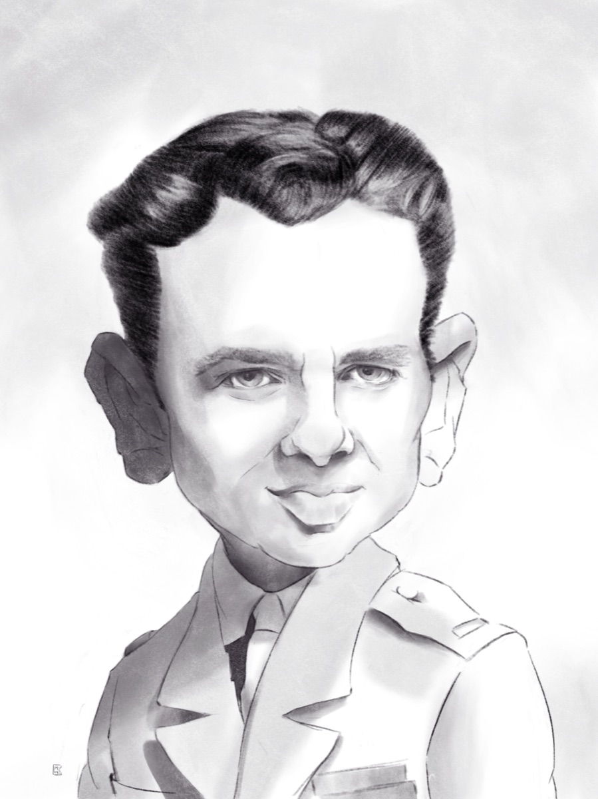

Jean Gabin, Jean-Paul Belmondo, Gérard Depardieu, mais aussi les actrices et acteurs contemporains : le cinéma offre des visages sculptés par la caméra. Marc Williame, caricaturiste belge, les dessine en exagérant les traits qui les ont rendus immortels.

Le charmeur d’antan
Caricature acteur cinéma : jouer avec les traits
Un acteur se reconnaît à un regard, une mâchoire, une façon de tenir la tête. La caricature d'acteur cinéma pousse ces éléments au maximum tout en respectant la personnalité de l'interprète.
Collectionner les caricatures d'acteurs
Les amateurs de cinéma aiment collectionner les portraits de leurs acteurs préférés. Pour connaître les possibilités d’acquisition, contactez Caric’Art.